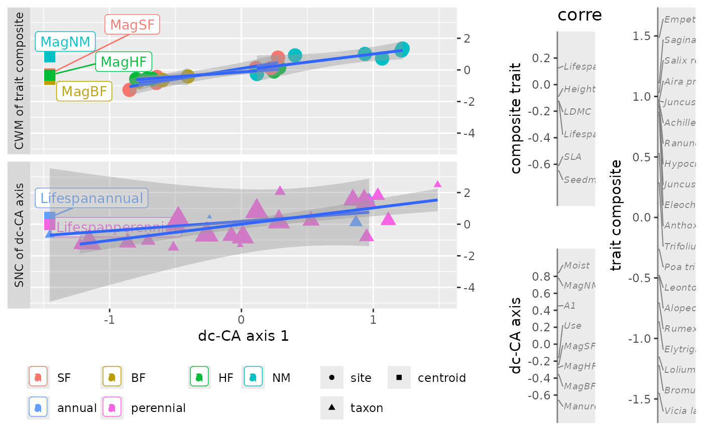

Utility function: extracting data from a dc_CA object for plotting a single axis by your own code or plot.dcca.
Source: R/getPlotdata.R
getPlotdata.RdgetPlotdata extracts data from a dc_CA object for
plotting the CWMs and SNCs of a single axis.
Usage
getPlotdata(
x,
axis = 1,
envfactor = NULL,
traitfactor = NULL,
newnames = NULL,
facet = TRUE,
remove_centroids = FALSE
)Arguments
- x
results from
dc_CAof classdcca.- axis
the axis number to get (default 1).
- envfactor
name of row factor to display as color and lines in the CWM plot (default
NULL). The default extracts the factor from the environmental model. If set toNA, no additional coloring and lines are displayed inplot.dcca. The parameter sets thegroupsvariable in theCWM_SNCdata frame of the return value/in the plot.- traitfactor
name of column factor to display as color and lines in the SNC plot (default
NULL). The default extracts the factor from the trait model. If set toNA, no additional coloring and lines are displayed inplot.dcca. The parameter sets thegroupsvariable in theCWM_SNCdata frame of the return value/in the plot.- newnames
a list with two elements: names for traits and for environmental variables, default
NULLfor names derived from the result ofscores.dccawithtidy = TRUE.- facet
logical. Default
TRUEfor CWMs and SNCs plots in separate panels. IfFALSE, this parameter changes the position of the environmental centroid names (from left to right).- remove_centroids
logical to remove any centroids from the plot data (default
FALSE). Can be a two-vector, e.g.c(TRUE, FALSE)to remove only the trait centroids.
Value
A list with three components
- CWM_SNC
a data.frame containing plot data
- trait_env_scores
a vector of scores per trait/environment
- newNameList
a vector of new names to be used in the plot
Details
The current implementation sets the traitfactor to
NA if the trait model contains more than a single trait factor
and the envfactor to NA if the environmental model
contains more than a single environmental factor.
Examples
data("dune_trait_env")
# rownames are carried forward in results
rownames(dune_trait_env$comm) <- dune_trait_env$comm$Sites
# must delete "Sites" from response matrix or data frame
Y <- dune_trait_env$comm[, -1] # must delete "Sites"
out <- dc_CA(formulaEnv = ~ A1 + Moist + Use + Manure + Mag,
formulaTraits = ~ SLA + Height + LDMC + Seedmass + Lifespan,
response = Y,
dataEnv = dune_trait_env$envir,
dataTraits = dune_trait_env$traits,
verbose = FALSE)
dat <- getPlotdata(out)
names(dat)
#> [1] "CWM_SNC" "trait_env_scores" "oldNameList" "newNameList"
names(dat$CWM_SNC)
#> [1] "dcCA1" "score" "label" "CWM-SNC"
#> [5] "weight" "type" "points" "sizeweight"
#> [9] "smoothweight" "xforsmooth" "groups" "names"
#> [13] "centroidnames"
levels(dat$CWM_SNC$groups)
#> [1] "SF" "BF" "HF" "NM" "annual" "perennial"
plot(out)
